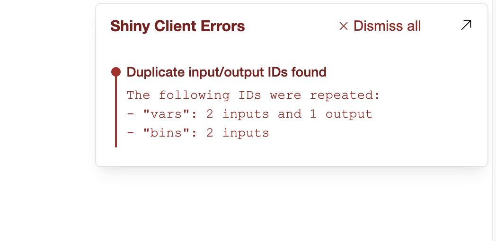
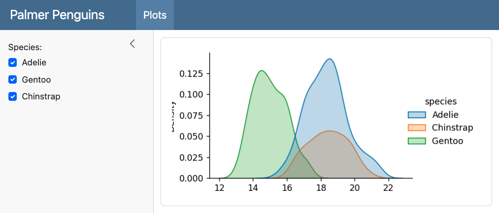
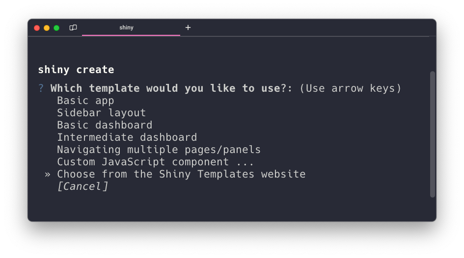

Shiny for Python 0.9.0 is out! This version brings some exciting new features and improvements to the Shiny ecosystem. You can read the full changelog for a complete list of changes.
Editable Data Tables and Data Grids

One of the most exciting new features in this release is the ability to make your DataTable and DataGrid components editable. By setting editable=True within DataGrid or DataTable, you can allow users to directly edit the cells in your tables. This opens up a whole new range of possibilities for interactive data applications!
from shiny.express import render
@render.data_frame
def dt():
return render.DataGrid(my_data, editable=True)
@render.data_frame
def edited_dt():
return dt.data_view()Empowered Data Frame Renderer
You may have noticed in the previous example that we are now calling methods on the dt renderer object itself to access the edited data. This is part of a broader effort to empower the renderers with additional methods that make it easier to work with anything related to the renderer.
Typically, we would retrieve this Output related information via the input object (e.g. input.<ID>_<KEY>). This feels a little magical in that is just appears within the input object. There are no hints other than disconnected documentation on what input values are available or even what their values represent.
Using @render.data_frame decorator, we upgrade your render function into a Renderer class instance that has helper methods specific to the renderer. The Shiny Team is currently exploring what methods we can add to empower the data frame renderer. So far, the data frame renderer has been enhanced with these extra methods for you to reactively access computed values:
.data()- Reactive value of the original data frame..data_view(*, selected:bool = False)- Reactive value of the data frame with all applied edits, column filters, and column sorting. Ifselected=True, only the selected rows/columns are returned..input_cell_selection()- Reactive value of the data frame’s selected cells. This returns a dictionary that containstypeand possiblyrowsandcolumnsthat contain the selected row and column indices, respectively..update_cell_selection(selection)- Method to update the selected cells of the data frame. Theselectionargument should be a dictionary that containstypeand possiblyrowsandcolumnsthat contain the selected row and column indices, respectively..set_patch_fn(fn)- Decorator to set a function that will be called when the user makes an edit to the data frame. The function should accept a single patch dictionary as an argument and return an upgraded value.
(Link to data frame renderer helper methods and attributes.)
By adding the helper methods, we gain documentation, typing support, and an explicit way to access the data frame’s accessory information.
We’re excited about this approach and are looking at ways we can bring it to other outputs. Please let us know what you think!
Changes to row selection with Data Tables and Data Grids
In addition to editability, we’ve also made some changes to the way row selection works in these components. The row_selection parameter has been deprecated in favor of the new selection_mode parameter. You can now use selection_mode="row" for single row selection or selection_mode="rows" for multiple row selection.
Also note that the way to access which selected rows has changed. Previously, if your table output was named dt, then you would access the selected rows with input.dt_selected_rows(). As of 0.9.0, you instead should use dt.input_cell_selection()["rows"].
@render.data_frame
def dt():
return DataGrid(my_data)
@reactive.effect
def _():
# Old way
selected_rows = input.dt_selected_rows()
# New in v0.9.0
selected_rows = dt.input_cell_selection()["rows"]In case you’re wondering, we are planning to add support for other types of selections, like columns and rectangular regions.
Update: .input_row_selection() and input.<ID>_selected_rows() were prematurely removed in v0.9.0 and will be restored (as deprecated) in the next release.
Error Console
Shiny for Python 0.9.0 includes an error console that surfaces client-side errors directly in the browser’s UI when running applications locally. The error console also catches common issues, such as duplicated input or output IDs, that can only be caught when the app is running.

The error console is enabled by default when you launch your app with shiny run or via the Shiny VS Code extension. The error console is automatically disabled when your app is deployed to a server, but can also be manually disabled with shiny run --no-dev-mode.
Shiny Express in Quarto Dashboards
Shiny Express syntax is now supported within Quarto Dashboards! This makes it even easier to create interactive data dashboards with Shiny and Quarto.
Quarto code
---
title: "Palmer Penguins"
format: dashboard
server: shiny
---
```{python}
#| context: setup
import seaborn as sns
from shiny.express import render, ui, input
penguins = sns.load_dataset("penguins")
```
# {.sidebar}
```{python}
species = list(penguins["species"].value_counts().index)
ui.input_checkbox_group(
"species", "Species:",
species, selected = species
)
```
# Plots
```{python}
@render.plot
def depth():
data = penguins[penguins["species"].isin(input.species())]
return sns.displot(
data, x = "bill_depth_mm",
hue = "species", kind = "kde",
fill = True
)
```
Other Improvements
The shiny create CLI command now includes additional templates and an option to open the new Shiny Templates website where you can find templates to quickly jump start your app. This makes it easier than ever to get started with Shiny for Python! 🏎️💨

Layout components have received several improvements in this release. The col_widths argument of ui.layout_columns() now sets the sm breakpoint by default, providing better responsiveness on smaller screens. ui.card() and ui.value_box() now have an id argument that allows you to track the full-screen state of these components. You can also now set min_height and max_height on ui.value_box(), ui.layout_columns(), and ui.layout_column_wrap() to ensure that your layouts always stay within a certain size range.
We’re thrilled to bring you these new features and improvements in Shiny for Python 0.9.0. As always, if you have any questions or feedback, please join us on Discord or open an issue on GitHub. Happy Shiny-ing!